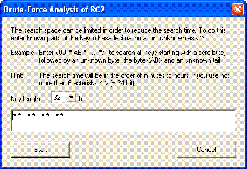
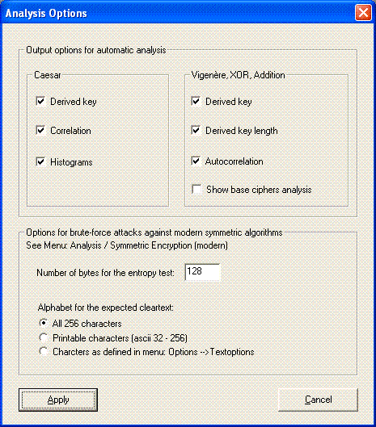
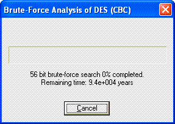

Mo¿na otworzyæ to okno poprzez wybór odpowiednich opcji w menu Kryptoanaliza \ Szyfrowanie symetryczne (nowoczesne) .
To okno dialogowe jest u¿ywane do wprowadzenia przestrzeni klucza ,w której poszukiwany bêdzie odpowiedni klucz, pod czas ataku brutalnej si³y ,za pomoc¹ jednego z algorytmów szyfrowania:
Po wprowadzeniu przestrzeni poszukiwañ klucza, mo¿na rozpocz¹æ atak brutalnej si³y poprzez klikniêcie przycisku start lub wciœniêcie przycisku zwrot klucza. W celu przerwania ataku, klikamy Anuluj.
Klucze wprowadzane s¹ w notacji heksadecymalnej.
Dla nieznanych danych klucza na odpowiednich pozycjach wprowadzamy *. Tak wiêc jeœli wpiszesz: "10 ** 23 00 ... 00" wszystkie z (2^4)*(2^4) = 256 kluczy zostan¹ przeszukane. S¹ to: "10 00 23 00 ... 00", "10 10 23 00 ... 00", "10 20 23 00 ... 00",... "10 F0 23 00 ... 00"... "10 FF 23 00 ... 00". Piêæ nieznanych pozycji oznacza, ¿e przeszukanych bêdzie w najgorszym przypadku 2^(4*5) = 1,048,576 mo¿liwych kluczy.
Czas trwania ataku brutalnej si³y zale¿y g³ównie od liczby nieznanych pozycji w kluczu. Ka¿da nieznana pozycja zwiêksza czas ataku 16 razy. Czas ataku zale¿y, tak¿e od wybranego algorytmu szyfrowania i od d³ugoœci klucza. Jest tak¿e zale¿ny od liczby bajtów dokumentu, którego entropia zosta³a zbadana przed uruchomieniem algorytmu ataku, aby dowiedzieæ siê wiêcej otwórz opcje kryptoanalizy:
Uwaga 1:
Stosuj¹c algorytm szyfrowania DES(triple DES), w ataku brutalnej si³y, pojawia siê d³ugoœæ klucza 64 (128) bitów. Poniewa¿ ta metoda u¿ywa jednego bitu na bajt, który jest równy bitowi, powoduje to, ¿e d³ugoœæ klucza wynosi tylko 56 (112) bitów!
Uwaga 2:
Mo¿liwoœæ pozostawienia dowolnej liczby nieznanych pozycji w poszukiwanym kluczu (umo¿liwia to przeszukiwanie bardzo du¿ej przestrzeni kluczy), nie oznacza, ¿e CrypTool mo¿e byæ u¿yty jako narzêdzie hakierskie.
Jak widaæ w pokazanym oknie dialogowym, CrypTool daje u¿ytkownikowi tylko mo¿liwoœæ obserwacji, jak d³ugi czas jest potrzebny (na przyk³ad. 10^26 lat dla ca³ego 128 bitowego klucza), jeœli d³ugoœæ klucza jest wystarczaj¹co du¿a i zastosowana jest poprawna metoda..
